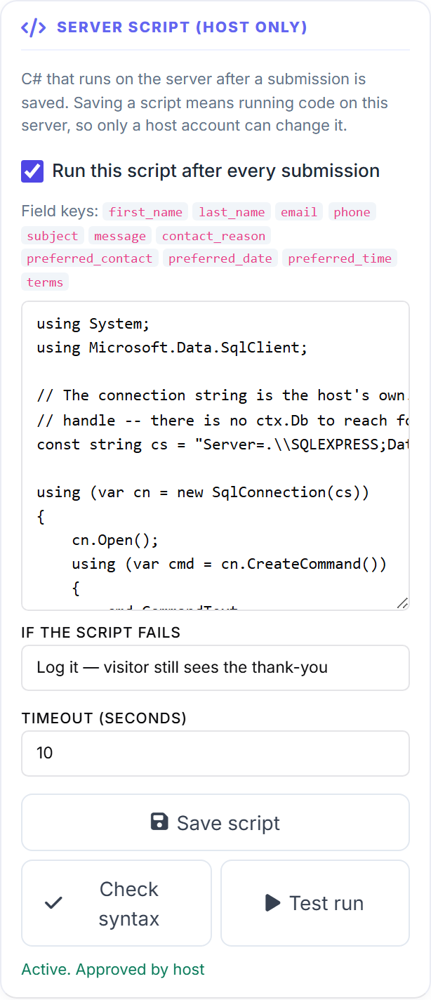

Run your own C# after a submission (Oqtane)
MegaForm can run C# that you write on the server, once a submission has been saved. It is the escape hatch for the work the webhook step, the database step and workflow cannot express — a second write that depends on the first, a destination chosen by an answer, a total your finance team rounds their own way.
The code is ordinary C#. You open a SqlConnection, you new HttpClient(), you call Oqtane's own
services with a normal using. There is no MegaForm-specific object model to learn beyond one
parameter, ctx, which carries the submission.
Important
Saving a script means running code inside the Oqtane server process. On Oqtane that process is shared by every site on the installation, which is why authoring is restricted to a Host account and not to a site Administrator. Read Safety and responsibility before you switch this on.
1. Turning it on
Two things must be true, and neither one alone is enough.
a. The installation-level switch. Add this to appsettings.json next to Oqtane.Server.dll,
then restart the site:
{
"MegaForm": {
"AfterSubmitScriptEnabled": true
}
}
Off by default, and an absent or unreadable value stays off. Without it every authoring call is
refused with feature_disabled and a message naming the setting.
b. A Host account. Site Administrator is deliberately not enough — see the note above. A site
Admin authoring a script gets host_only.
The compiler itself ships inside the module package as MegaForm.Scripting.dll. If it is missing,
every call is refused with compiler_missing rather than falling back to some other way of running
the source.
Note
Packages before 2.0.21 did not carry MegaForm.Scripting.dll on Oqtane at all, so this feature
could not run on any Oqtane site regardless of the switch. If you see compiler_missing on a
current package, the file did not survive the install — check the site root.
2. Where the editor is
Open the form in the builder, go to Settings, and find Server Script (host only).

The panel shows the form's field keys as chips — these are the leaf keys ctx.GetString and its
siblings resolve. Layout containers are not listed, because a script never reads a row.
Three buttons, and the difference between them matters:
| Button | What it does |
|---|---|
| Check syntax | Compiles the source and shows diagnostics. Nothing is stored and nothing runs. |
| Test run | Compiles and executes against sample data you supply. Side effects are real — a script that writes a row writes one. |
| Save script | Compiles, then stores the source with an approval record. Refuses to save source that does not build. |
Note
Saving the script is independent of the builder's own Save button. Saving the form does not save the script, and saving the script does not save the form. The two have different authority.
3. A first script
// Runs on the server after the submission is saved.
var email = ctx.GetString("email");
var subject = ctx.GetString("subject");
ctx.Log("submission " + ctx.SubmissionId + " from " + email + ": " + subject);
ctx.SetVariable("handled", true);
ctx.Log writes to the run record; ctx.SetVariable records a named result. Both are visible in
Test run output, which is the quickest way to see what your script saw.
4. What ctx holds
ctx is data about this submission. It is deliberately not a service locator — there is no
ctx.Db, no ctx.Http, no ctx.Notify. Anything you want to reach, you reach the way any other
C# in this process would.
Reading the submitted values
var name = ctx.GetString("first_name"); // "" when absent
var qty = ctx.GetInt("quantity", 1); // fallback when absent or unparseable
var total = ctx.GetDecimal("order_total");
var optedIn = ctx.GetBool("newsletter");
var when = ctx.GetDate("preferred_date"); // DateTime?, null when absent
if (ctx.Has("phone")) ctx.Log("phone supplied");
foreach (var pair in ctx.Data) ctx.Log(pair.Key + " = " + pair.Value);
A key that is not in the submission reads as empty rather than throwing — which also means a mistyped key is silent. Copy keys from the chips in the panel.
Which submission, and whose
| Member | Notes |
|---|---|
ctx.FormId, ctx.SubmissionId |
SubmissionId is 0 during Test run — the row does not exist yet. |
ctx.FormTitle, ctx.PortalId |
On Oqtane PortalId carries the site id. |
ctx.UserId, ctx.UserName, ctx.UserEmail |
Empty / 0 for an anonymous visitor. |
ctx.IpAddress |
The caller's address as the server saw it. |
ctx.UtcNow |
One timestamp for the whole run, so two writes agree. |
Recording, changing, failing
ctx.Log("looked up the customer"); // run record
ctx.SetVariable("crmId", 4192); // named result, visible in Test run
ctx.SetValue("status", "reviewed"); // queued into ctx.PendingChanges
if (string.IsNullOrEmpty(ctx.GetString("email")))
ctx.Fail("No email address supplied.");
After the row is committed — which is when this script runs — ctx.CanAbort is false. ctx.Fail
therefore records a failure; it does not un-save the submission. Whether the visitor is told depends
on the If the script fails choice in the panel: Log it keeps the thank-you, Report it
surfaces the message.
5. What is supported
The language is C# 7.3
Not the version Oqtane itself is built with. Measured against a live Oqtane 10.2.1 site, these are
rejected with CS8370:
| Feature | Version |
|---|---|
| switch expressions / recursive patterns | C# 8 |
using declarations (without a block) |
C# 8 |
target-typed new() |
C# 9 |
So write using (var x = ...) { } with a block, and new StringBuilder() in full. out var,
tuples, pattern matching with is, local functions and expression-bodied members are all available.
Which libraries you can name
Everything the site has already loaded, plus the framework. That includes the Oqtane assemblies, so a script can name what a module in the same site can name.
Both SQL client namespaces bind on Oqtane — measured, both compile:
using System;
using Microsoft.Data.SqlClient;
const string cs = "Server=.;Database=MySite;Trusted_Connection=True;TrustServerCertificate=True;";
using (var cn = new SqlConnection(cs))
{
cn.Open();
using (var cmd = cn.CreateCommand())
{
cmd.CommandText = "INSERT INTO CrmLead (Email, Subject, CreatedUtc) VALUES (@e, @s, @t)";
cmd.Parameters.AddWithValue("@e", ctx.GetString("email"));
cmd.Parameters.AddWithValue("@s", ctx.GetString("subject"));
cmd.Parameters.AddWithValue("@t", ctx.UtcNow);
cmd.ExecuteNonQuery();
}
}
ctx.Log("wrote CRM lead for submission " + ctx.SubmissionId);
Microsoft.Data.SqlClient is the one the Oqtane server already uses; prefer it.
The connection string is yours to supply. ctx carries the submission, not a database handle, so
there is nothing to inherit — put the string in the script, or read it from your own configuration.
Calling an HTTP service
using System;
using System.Net.Http;
using System.Text;
var payload = "{\"email\":\"" + ctx.GetString("email") + "\"}";
using (var http = new HttpClient())
{
http.Timeout = TimeSpan.FromSeconds(5);
var content = new StringContent(payload, Encoding.UTF8, "application/json");
var reply = http.PostAsync("https://crm.example.com/api/leads", content).GetAwaiter().GetResult();
ctx.Log("CRM replied " + (int)reply.StatusCode);
}
Keep the timeout well under the script timeout, and remember that a slow call here is time the visitor spends waiting for their thank-you.
Size and time
| Limit | Value |
|---|---|
| Source length | 65,536 characters |
| Timeout | 10 seconds by default, set per form in the panel |
6. The three gates
A script runs only when all three agree:
- The installation switch —
MegaForm:AfterSubmitScriptEnabledinappsettings.json. - The author — a Host account saved it.
- The approval hash — a SHA-256 over the source, recorded at save time.
The third gate is the one worth understanding. The hash means source that arrives by some route other than a Host pressing Save — an imported form, a restored template, a database edit — is inert. It is stored, it is visible, and it does not run until a Host on that site opens the panel and saves it. Changing one character invalidates the approval.
7. Why a script did not run
Work down this list; the first three are silent by design.
The submission was scored as spam. This catches people out more than anything else. A submission
the anti-spam heuristic flags is still inserted, and the visitor still receives the thank-you and
an HTTP 200 — but the whole post-commit branch is skipped, script included. Submissions posted by a
test harness are the usual victims, because filling a form in zero seconds is exactly what a bot
does. Check IsSpam and SpamScore on the row:
SELECT SubmissionId, IsSpam, SpamScore
FROM MF_Submissions
WHERE FormId = 1
ORDER BY SubmissionId DESC;
If you are driving the submit endpoint directly, send a realistic submissionTime (seconds spent on
the form). On a live Oqtane site the same submission scored 55 with submissionTime omitted —
flagged — and 25 with submissionTime: 32.5 — accepted and the script ran.
The switch is off in the panel. Run this script after every submission has to be ticked. The
panel's status line says Active. Approved by host when everything is in order.
The approval no longer matches. Edit the source anywhere other than the panel and it stops running. Re-save from the panel.
The compiler is missing. The panel reports compiler_missing. MegaForm.Scripting.dll is not
in the site root.
"Could not reach the server." The panel's catch-all for a failed request. Open the browser's
network tab: the calls should go to /api/MegaFormPopup/FormScript/*. A 403 is an authority answer
(host_only or feature_disabled) rather than a network problem.
8. What is recorded when it runs
Each run records the form and submission, the approved hash, success or failure, duration, any error
message, and everything ctx.Log wrote. Test run shows the same information immediately, which
is the fastest loop while you are writing.
Related
- Safety and responsibility — what this feature does and does not protect you from. Read it before switching the setting on.
- After Submission — the notification, webhook and database steps to try before reaching for code.
- Integration: Write to an existing SQL table — the no-code path for a plain INSERT.
- Workflow — approvals, delays and branching, which do not need a script.